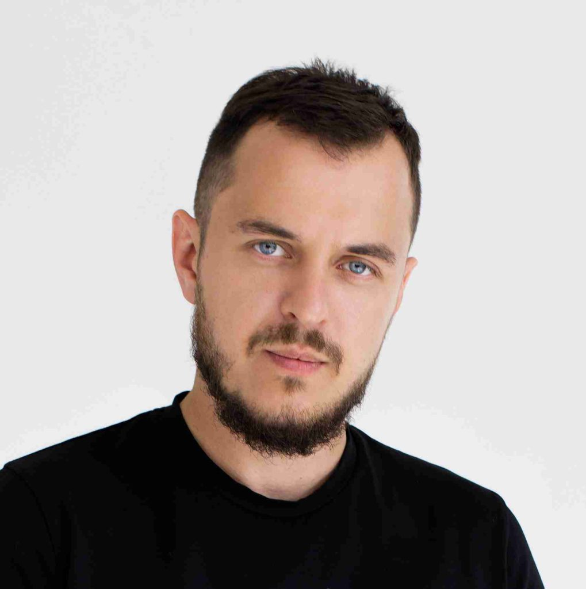

Сергей Садков
Arni әзірлеушісі · «Арнионның» тең құрылтайшысы
200 000-нан астам пайдаланушысы бар AutoOffice онлайн-бизнесті автоматтандыру платформасын жасап, сатты. Yield AI жобасын құрып, оны әзірлеуде ЖИ қолданды.
-
Solana және Aptos хакатондарында жүлделі орындарға ие болды. Yield AI 2025 жылы Move AI Hackathon-да екінші орын алды.
Devfolio-дағы нәтиже -
2022 жылы цифрлық теңге бойынша Ideathon-да «Қауіпсіз мәміле» жобасымен бірінші орын алды.
Жоба тарихы